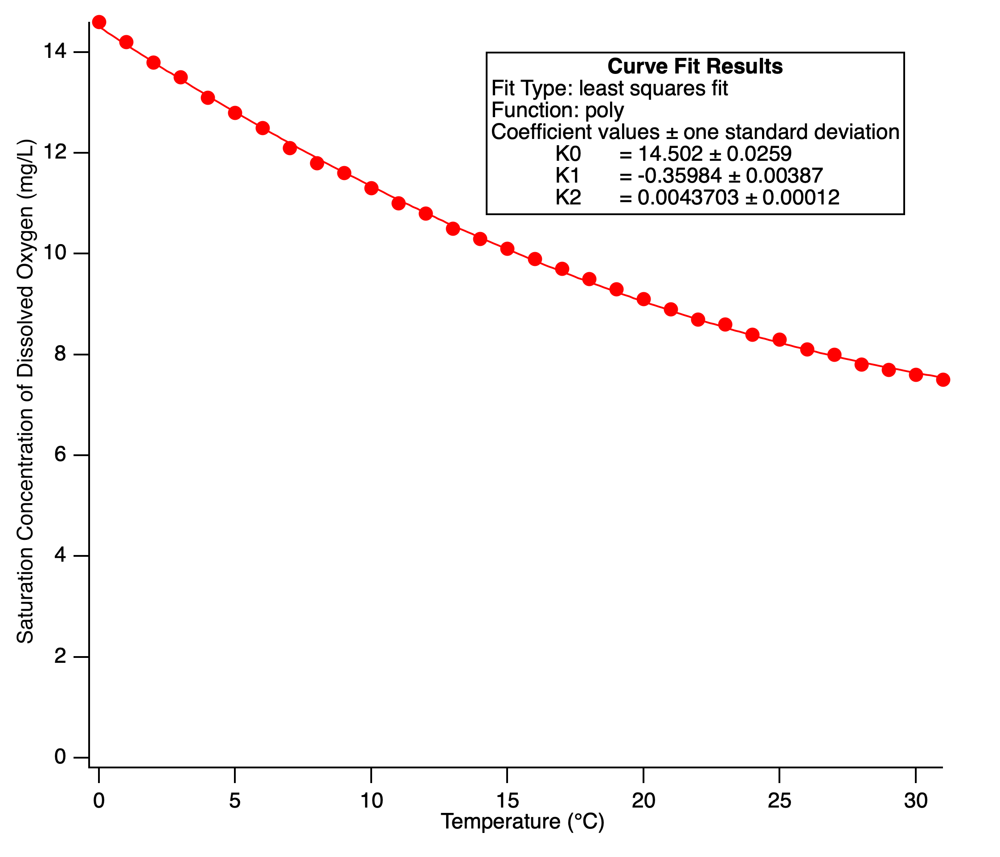

| Breakout | Meadow Connections |
|---|---|
| - | Ground |
| + | 3.3V |
| A | Any analog input port |
Calibration is expected to be slightly different for each electrode, and to slowly change over time as the electrode oxidizes. A reasonable rule of thumb might be to redo the calibration procedure every 6 months and also change electrolyte solution.
As described by the Nernst equation, electrochemical potential and thus sensor voltage increases with temperature at a given oxygen concentration. We use sensor readings for two points of oxygen concentration over a range of temperatures to compensate for this temperature dependence. The first point is water saturated with oxygen, constantly stirred while in contact with air, and the second point is zero dissolved oxygen using saturated sodium metabisulfite (an oxygen scavenging reagent) to eliminate all oxygen, while limiting contact with air. We assume that sensor voltage maps oxygen concentration linearly between these two values at a given temperature.
Note that the saturation concentration of oxygen in water varies with temperature, decreasing by about 47% as water is heated from 0 to 30 C, as shown in figure 1. Thus, the saturation calibration value is not constant across temperatures. This needs to be taken into account when making the calibration. Note that oxygen saturation concentration will increase with atmospheric pressure, and that sensor voltage will vary with salinity independent of oxygen concentration, but we do not correct for these factors.
 A .NET library and sample application for the [Gravity dissolved oxygen sensor](https://atlas-scientific.com/embedded-solutions/dissolved-oxygen-meter/) using Wilderness Lab's [Meadow Foundation API](https://developer.wildernesslabs.co/docs/api/Meadow.Foundation/) with support for the [ProjectLab v3](https://store.wildernesslabs.co/collections/frontpage/products/project-lab-board). The code should work with any analog dissolved oxygen sensor.